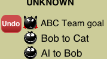
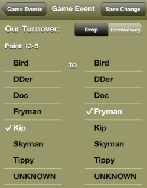

Support
Having a problem with UltiAnalytics? Check out the FAQ that follows.
If you still have a question (or suggestion) send us a note.
Frequently Asked Questions
Click on a question below to get details:
UltiAnalytics automatically creates a custom site for your team the first time you upload your team. Each team you create get's it own site. The site is public so you and
your teammates can view the pages without logging on. You can protect your site such that visitors to the site must enter a password to
see your team statistics (see next FAQ item).
You can protect your site such that visitors to the site must enter a password to see your team statistics. You can set (or change)
the password at any time after you have uploaded your team for the first time. To change the password, go to
your website admin page choose the team and then change the password.

UltiAnalytics uses Google App Engine™ for storing team data (and generating your team website). The team data may only be changed by a user with this id/password.
NOTE: You should consider creating a new Gmail™ account if you are going to allow more than one person to update the team data so that you don't compromise your personal Gmail™ credentials.
NOTE: You should consider creating a new Gmail™ account if you are going to allow more than one person to update the team data so that you don't compromise your personal Gmail™ credentials.
No. In fact, you should consider creating a new Gmail™ account if you are going to allow more than one person to update the team data so that you don't compromise your personal Gmail™ credentials.
Use the ""undo" button. This red button deletes the last mistaken tap. You can click it as many times as you like.
Each time you click it will undo one more event. If you keep clicking it you will unwind the entire game.
As you undo it will adjust the view to reflect what it should be again at the time of that event.
This might mean switching between defense view and offense view and even switching to the line view.
Alternatively, you can use the app's correction feature. Just find the event (pick "Events" from the Game view or swipe up from the Action view to see events) and select it. You can change the player(s) for event and make other changes for some events (e.g., changing from drop to throwaway, or OB pull to inbounds pull).

Alternatively, you can use the app's correction feature. Just find the event (pick "Events" from the Game view or swipe up from the Action view to see events) and select it. You can change the player(s) for event and make other changes for some events (e.g., changing from drop to throwaway, or OB pull to inbounds pull).

If you need to record a substitution go to the Line view just like you would to set/correct the players on the field. If you
go this view after an event has been recorded for a point a "Substitution" button will appear. If you are really doing a
substitution (as opposed to correcting) then click this button. The Substitution view will be presented.
UltiAnalytics allows you to record callahans for your team by long-pressing* the D button. Likewise you can record
your team's turnovers caused by stall or misc. penalty by long-pressing the Throwaway button.
* to long-press tap and hold the button. A menu will appear with choices.
* to long-press tap and hold the button. A menu will appear with choices.
UltiAnalytics allows you to export and import games using the admin web site
(http://www.ultianalytics.com/team/admin).
- To export: browse to the games tab, pick your game and click the Export link. This will create a file that you can import back into UltiAnalytics.
- If you want to move the game to another team then choose the team in the admin site, browse to the games tab and click the Import Game button.
- If you want another person to have that game you can send the export file to them in an e-mail. They can then import the game into one of their teams.
Unfortunately Twitter has limits to how many tweets it will accept from a user during the day. And worse, once it reaches those limits it rejects all messages for an hour or two. To keep you from exceeding your "tweet budget" UltiAnalytics governs the tweets and skips tweets that are not considered critical.
This is usually the result of duplicate messages which Twitter rejects.
- To publish real-time scores to leaguevine, follow these instructions.
- To publish detailed stats to leaguevine, follow these instructions.
UltiAnalytics allows you to manage players using the admin web site
(http://www.ultianalytics.com/team/admin).
From the team's Players tab you can:
- Merge 2 players if you accidentally have 2 players that are the same person
- Delete or rename a player